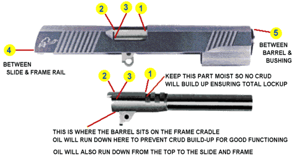

Article Version
|
Historical site
Ed Masaki is a master pistolsmith from Hawaii. If there was someone who would know the best methods for maintaining a fine accurized pistol, he is the man.
OIL THESE PLACES

When the numbered places look dry, oil them.